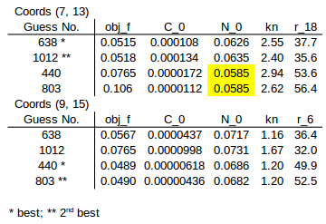

Fits of overlapping 5x5 zones
Procedure
I took cell measurement data from plate 15 for overlapping 5x5 zones with top-left coordinates (7, 13) and (9, 15) where coordinates start (0, 0). I guessed the initial amount of nutrients from the average of final cell amounts. I used a 10x11x11 grid of guesses for C_0, kn, and r. C_0 guesses were on a logarithmic scale whereas kn and r guesses were ona linear scale (see code below). I used the same r guess for all cultures in a single fit.
Code for grid of guesses:
import numpy as np C_0s = np.logspace(-10, -1, 10) kns = np.linspace(0.0, 10.0, 11) rs = np.linspace(25.0, 75.0, 11) |
I made bounds large in the hope that solutions would not have any estimates located at a boundary. I fit the competition model to both zones using each of the 1000 initial guesses. The table bw
The two best fits for each zone have reasonable agreement in estimated parameters. However we are hoping to find a global minimum where the parameter estimates are, within the limits of accuracy of the minimizer, the same and it doesn't look like this is happening.
Unfortunately, agreement of parameter estimates between the two zones is fairly poor.
For zone (7, 13) estimates 440 and 803 produced N_0 guesses at the lower bounds.
I am not sure how much cultures the boundaries could be messing up fits. At the moment I include least squares fits of cell observations for edge cultures in the objective function. This will cause issues for the model because neighbours compete for nutrients and there is a great uncertainty about the amount of nutrients in edge cultures due to competition with cultures outside the boundary. There is likely to be a net flux of nutrients between the zone and the rest of the plate. When we include all of the cultures in the objective function we also fix the total amount of nutrients in the zone (assuming growth runs long enough to complete this is equal to the final amount of cells) and this affects N_0 (in fact all of the parameters are coupled). In fits of zones, a buffer could be created by allowing parameters for edge cultures to be estimated but without including measurements for these cultures in the objective function.
In the current fits, I made guesses of N_0 from the zone from which I determined bounds. If there is a buffer at the boundary, N_0 is not so strongly coupled to the final cell observations and I can instead use guesses and bounds for the plate rather than zone.
I have increased the speed of simulations significantly by vectorising ode calculations using numpy (5x for full plate). We also have an even faster simulation method using RoadRunner with models written in SBML (50x faster again for a full plate). This should have translated into a speed up of fitting so we could now also try fitting larger zones where there is a smaller proportion of edge cultures.
(I could fit a simulated zone to check this. I may have already done this somewhere.)
Plots of Fits
How do the plots look. Why are we haveing truble?
Comments